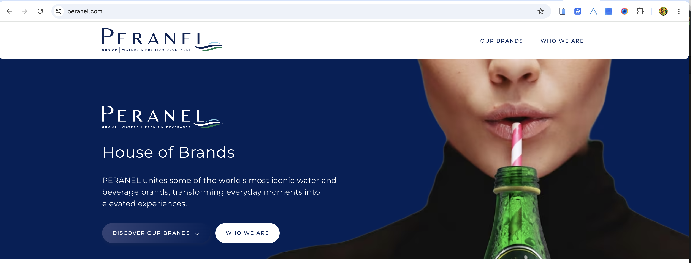
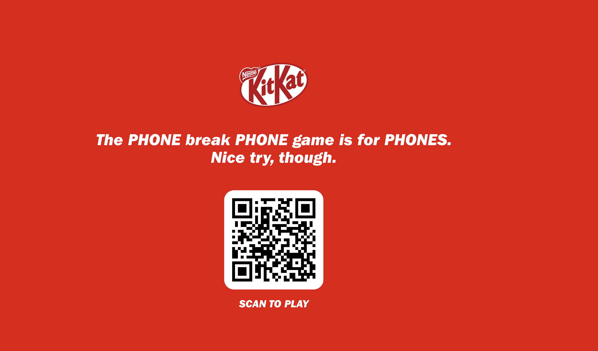
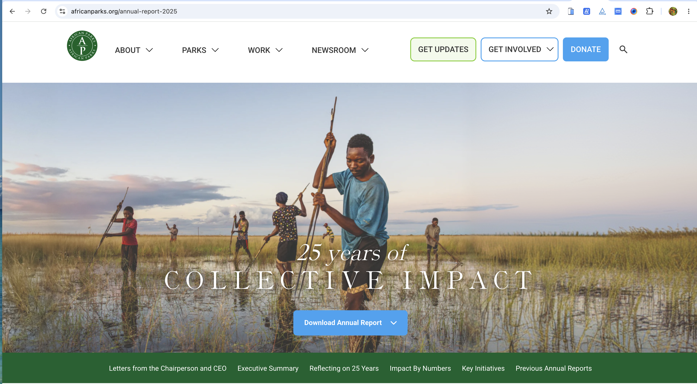
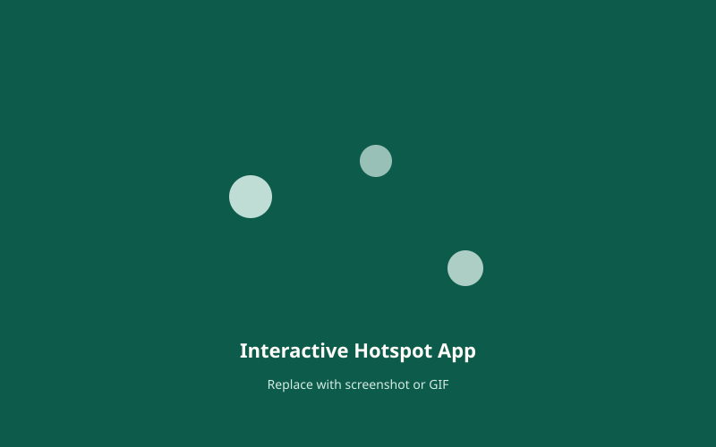
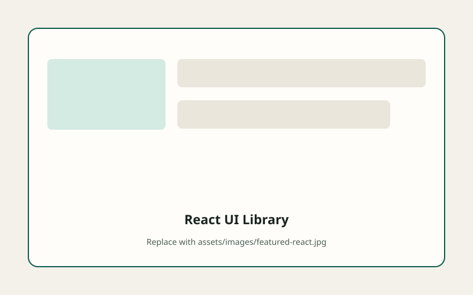
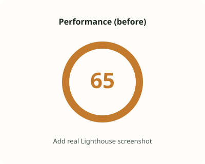
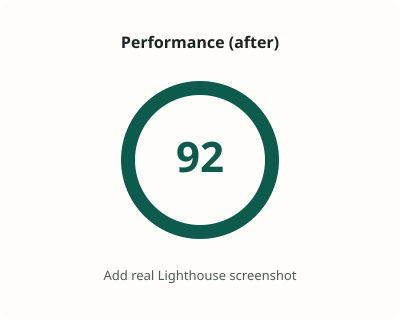

Open to senior frontend roles — agency & in-house
Senior Frontend Engineer · South Africa
Vumile Sibande
I ship accessible, performant enterprise frontends—from live Drupal platforms to React/Drupal integrations, complex vanilla JS, and modern React/Next.js applications.
Senior frontend engineer with 10+ years delivering enterprise platforms. Primary frontend on Peranel.com — a live Drupal 11 site launched on schedule. Integrated a React 19 production SPA into Drupal as a custom module for KitKat PBPG. Production frontend on African Parks Annual Report 2025. Deep experience in component architecture, accessibility, and performance—currently shipping React and Next.js projects.
10+
Years shipping production UI
Live
Peranel.com · Drupal 11 · primary frontend
React
Next.js · TypeScript · Drupal integration
Featured work
Live production platforms and modern product UI—open the demos, read the case studies.


African Parks Annual Report 2025
Live production sections — hero, sticky nav, impact, initiatives.
Read case study
Interactive Hotspot Application
Next.js app — 54 countries, filters, deep links, compare mode.
Read case studyMeasurable impact
Approximate results from production work—focused on outcomes recruiters can scan quickly.
- Live Peranel.com — enterprise Drupal 11 platform, primary frontend, launched on schedule
- React + Drupal KitKat PBPG — React 19 production SPA integrated as a Drupal custom module
- 65 → 90+ Lighthouse Performance on KitKat market pages via asset and script optimization
- 54 countries Interactive map UI with hotspots, filters, and shareable deep links
Why hire me
I bring production discipline to enterprise frontend work—whether your stack is Drupal, React, Next.js, or a hybrid CMS plus SPA.
-
Enterprise delivery
Live Drupal 11 platform (Peranel), production nonprofit frontend (African Parks), and global brand platforms (KitKat, Purina) across multiple markets.
-
React + Drupal integration
Packaged a React 19 / Vite production SPA as a Drupal custom module, serving it under a sub-path with a multi-target build pipeline.
-
Complex vanilla JS
Custom infinite carousel with fisheye scaling, dual-viewport sync, keyboard navigation, and full accessibility — no framework required.
-
Quality & team-ready
WCAG/ARIA accessibility, Core Web Vitals performance, design handoff, and collaboration with backend, CMS, and DevOps teams.
Professional summary
Senior frontend engineer with 10+ years delivering scalable, accessible, high-performance enterprise platforms. Primary frontend on Peranel.com — a live Drupal 11 site launched on schedule. Integrated a React 19 production SPA into Drupal as a custom module for KitKat PBPG. Production frontend sections on African Parks Annual Report 2025. Deep background in component architecture, performance, and accessibility across global brand platforms.
Comfortable building complex vanilla JavaScript components, integrating modern React applications into Drupal and CMS-driven architectures, and collaborating with backend, design, and DevOps teams. Currently shipping React, Next.js, and TypeScript projects — complementing extensive enterprise frontend experience with modern product-development practices.
- Primary frontend on Peranel.com — live Drupal 11 platform
- React 19 + Drupal module integration for KitKat PBPG
- Production frontend sections on African Parks Annual Report 2025
- Enterprise Drupal delivery for KitKat and Purina across multiple markets
- Optimizely Certified Experimentation Web Platform Expert (2024)
- Live demos: React component system + interactive map app (54 countries)
Core skills
| Skill | Experience |
|---|---|
| HTML, CSS, SCSS architecture | 10+ years |
| JavaScript (ES6+) | 8+ years |
| Accessibility (WCAG / ARIA) | 8+ years |
| Component architecture & design systems | 10+ years |
| Drupal 9 / 10 / 11 theming & delivery | 9+ years |
| Performance optimization (Core Web Vitals, Lighthouse) | Production practice |
| Vanilla JS interactive components | Production (Peranel carousel) |
| React + Drupal integration (SPA as module) | Production (KitKat PBPG) |
| React / Next.js / TypeScript | Production projects · shipped |
| Build tooling (Vite, Sass, Terser, Lightning CSS) | Configured for production |
Frontend engineering
- Component-based architecture (React, Twig, design systems)
- React SPA integration into Drupal — module structure, routing, sub-path deployment
- Complex vanilla JS — carousels, scroll interactions, state-driven UI
- Performance optimization (Core Web Vitals, asset loading, CSS/JS efficiency)
- Accessibility and semantic HTML (WCAG, ARIA,
inert, live regions) - Interactive UI: filters, modals, deep links, responsive patterns
Technologies
- Frontend foundations
- HTML5, CSS3, SCSS/SASS, JavaScript (ES6+), semantic HTML, ARIA
- Modern stack
- React, Next.js, TypeScript, Tailwind CSS, reusable component patterns
- CMS & platforms
- Drupal 9/10/11 (theming, site building, Views, Twig, preprocess hooks, custom module integration), WordPress
- Engineering & tooling
- Git · npm, Node.js · Vite (multi-target builds), Webpack, Gulp · Sass, Terser, Lightning CSS · Drush, Composer · Chrome DevTools · AI-assisted development (Cursor)
Workflow & collaboration
- Cross-functional collaboration (Frontend, Backend, QA, DevOps)
- Agile workflows (Jira)
- Design-to-development handoff (Figma, Zeplin, Sketch, Photoshop)
- CI/CD collaboration and production issue resolution
Professional experience
Frontend Developer
- Peranel.com — primary frontend on a live Drupal 11 enterprise platform. Built responsive, accessible frontend systems from Figma designs. Delivered on schedule.
-
KitKat PBPG — packaged a React 19 / Vite 7 production SPA
(built by VML UK) as a Drupal custom module, serving it under
/phonebreakgame. Authored module definition, routing, and asset pipeline config. Configured multi-target Vite build and React Routerbasenamefor sub-path deployment. Documented enablement and troubleshooting for team reuse. - African Parks Annual Report 2025 — frontend sections including hero, sticky navigation, impact by numbers, key initiatives, and related articles.
- Built complex vanilla JavaScript components — including a custom infinite carousel with fisheye scaling, dual-viewport sync, keyboard navigation, and full accessibility.
- Build scalable, multilingual frontend systems across global brand platforms using Drupal, Twig, SCSS, and JavaScript.
- Improved Lighthouse Performance scores from ~65 to 90+ on key KitKat market pages through asset optimization, script loading strategy, and render-layer fixes (Core Web Vitals).
- Supported frontend compatibility remediation during Drupal upgrades — theme, module, and dependency fixes to keep releases stable across evolving stacks.
- Contribute to frontend architecture decisions for reusable components and structured content models.
- Support production stability through collaboration with backend, DevOps, and design teams.
Frontend Developer
- Delivered responsive, production-ready frontend implementations across Drupal and WordPress platforms.
- Translated design systems (Figma, Sketch, Photoshop) into reusable, maintainable templates.
- Collaborated with backend teams to integrate frontend components into CMS-driven architectures.
- Built and maintained responsive HTML email templates across clients and devices.
- Diagnosed and resolved cross-browser and frontend rendering issues.
Support Consultant
- Supported CMS-driven platforms through content updates, issue triage, and QA validation.
- Coordinated with engineering teams to resolve frontend, backend, and infrastructure issues.
- Contributed to production stability through testing and reporting across environments.
Selected platforms — VML
Global Nestlé and brand properties delivered from VML South Africa.
Selected platforms — VMLY&R
Financial services, education, FMCG, and corporate sites from earlier agency work.
Case studies
Deeper look at selected delivery—challenge, contribution, stack, and outcome.
Peranel.com — Global House-of-Brands Platform
Live Drupal 11 enterprise platform · primary frontend · launched on schedule
Challenge
- Deliver frontend for a corporate house-of-brands platform representing 10+ iconic beverage brands (Perrier, S.Pellegrino, Acqua Panna, and others)
- Drupal 11, mobile-first SCSS architecture, no Bootstrap
- Translate Figma designs into production-grade frontend
- Deliver on schedule
My contribution
- Primary frontend engineer — owned the frontend end-to-end
- Drupal 11 theming and component architecture
- SCSS architecture (mobile-first, no Bootstrap)
- Complex vanilla JS — including an accessible infinite carousel
- Accessibility (WCAG / ARIA), performance, and responsive behavior
- Collaborated with CTO (backend) and designer (Figma)
Tech stack
- Drupal 11
- Vanilla JavaScript (ES6+)
- SCSS (mobile-first)
- Semantic HTML
- Vite build pipeline (configured for production)
Outcome
Live production platform representing 10+ global beverage brands. Launched on schedule. Delivered with a 2-person team (frontend + CTO backend).
Sub-case: Accessible Infinite Carousel
One of the more complex interactive components on Peranel — a brand carousel with infinite loop, fisheye scaling, and dual-viewport sync, implemented in vanilla JavaScript from a Figma design.
- Infinite loop via clone-based approach with logical index math
- Fisheye scaling via distance-based interpolation (scale + opacity)
- Dual-viewport sync — slide track and brand nav track
-
Accessibility:
inerton clones,aria-current, live region announcements, keyboard navigation,prefers-reduced-motionsupport - Autoplay with pause on user interaction
- Debounced settle and scroll-based centering
- Responsive breakpoint configs (mobile / tablet / desktop)
KitKat PBPG — React + Drupal Module Integration
React 19 production SPA integrated into Drupal as a custom module
Challenge
- A standalone React 19 production SPA (built by VML UK) needed to run inside KitKat's Drupal site — not deployed separately
-
The app had to serve under a sub-path (
/phonebreakgame), not at the site root - Mobile-first, portrait-only promotional campaign — locked to a 9:16 viewport
My contribution
- Packaged the React/Vite build as a Drupal custom module
-
Authored
.info.yml,.module, and.routing.ymlfor module definition and SPA serving -
Configured Vite multi-target build (
build:drupal) with/phonebreakgame/base path -
Updated React Router
basenamefor sub-path deployment - Documented enablement workflows (CMS + Drush) and troubleshooting for team reuse
Tech stack
- React 19, TypeScript 5.9
- Vite 7, Tailwind CSS v4 (container queries)
- Zustand 5, React Router 7, Framer Motion 12
- Drupal custom module integration
- Playwright, Vercel Edge Middleware (staging)
Outcome
React app runs as a Drupal module under /phonebreakgame.
Delivered for staging. Module enablement and troubleshooting documented
for the team.
African Parks — Annual Report 2025
Live production frontend sections · Drupal · team project
Challenge
- Deliver frontend sections for a live annual report
- Conservation organization, high public visibility
- Drupal-based production delivery
My contribution
- Hero sections
- Sticky navigation
- Impact by numbers section
- Key initiatives section
- Related articles section
Tech stack
- Drupal
- SCSS (~36%)
- HTML (~32%)
- JavaScript (~31%)
Outcome
Live production at africanparks.org/annual-report-2025. Delivered as part of a VML team.
Interactive Hotspot Application
Responsive interactive map experience for exploring 54 African countries through location-based content, filtering and comparison.
Challenge
- Explore region-based content on an interactive map
- Filtering, compare views, and mobile-friendly panels
- Complex state, shareable URLs, and real data
My contribution
- Built interactive country hotspots using Leaflet / OpenStreetMap
- Implemented dynamic filtering and state-driven UI
- Built responsive detail panels and modal interactions
- Implemented shareable deep links
- Built country comparison functionality
- Developed responsive desktop / mobile interaction patterns
Tech stack
- React · Next.js
- JavaScript · Leaflet / OpenStreetMap
- State-driven UI and filtering
Outcome
Live demo covering 54 African countries with filters, compare mode, and production-quality responsive behaviour—strong proof of complex product-UI engineering.
React Component System
Reusable UI primitives with live interactive docs — React, TypeScript, Tailwind

Challenge
A reusable React component system exploring scalable component architecture, composition, responsive behaviour and maintainable UI patterns.
My contribution
- Carousel, Modal, Drawer, Form, Gallery, Video, Accordion
- Props, composition, and maintainable structure
- Scroll animations and interactive demos
Tech stack
- React, Next.js
- TypeScript, Tailwind CSS
Outcome
Live component system recruiters can click through in under a minute— demonstrates modern component architecture alongside enterprise frontend experience.
Performance & accessibility
I differentiate through measurable quality—not only shipping UI, but improving how it scores and behaves for real users and crawlers.
- Core Web Vitals and Lighthouse-driven optimization
- Asset loading, script deferral, and CSS/JS efficiency
- WCAG-oriented semantic HTML and ARIA patterns
-
Accessibility in complex components —
inert, live regions, keyboard navigation, reduced-motion support


Education & certifications
- Optimizely Certified Experimentation Web Platform Expert 2024
- A+ IT Principles Certificate Damelin, 2011
- N+ Network Technologies Certificate Damelin, 2011
Let's work together
vumilesibande@gmail.com · +27 79 672 8192 · South Africa. Open to Senior Frontend Engineer opportunities across product, in-house and digital engineering teams. Permanent, contract and remote/hybrid opportunities considered.